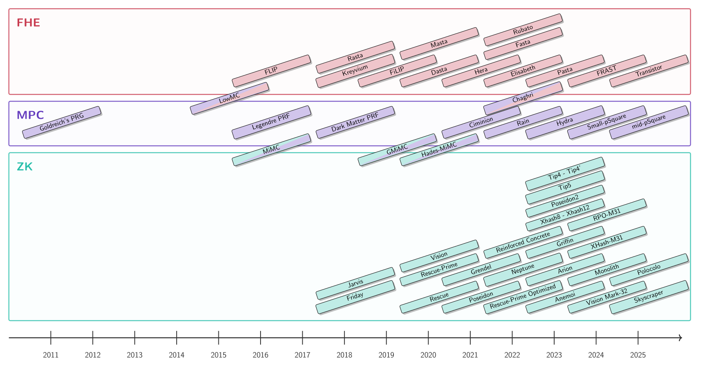

Clémence Bouvier
Research
Research activities
I am currently working on symmetric cryptography, and more specifically, my main research
interest is the cryptanalysis of arithmetization-oriented symmetric primitives.
In particular, I've been trying to better understand the mathematical properties of such primitives.
During my PhD, I've also had the opportunity to design Anemoi, exploiting a link between arithmetization-orientation and CCZ equivalence.
I am also co-creator of a wiki on STAP (Symmetric Techniques for Advanced Protocols) primitives.
The aim was to identify and classify the symmetric primitives defined for the FHE, MPC and ZK protocols.

© 2025 Clémence Bouvier. All rights reserved.